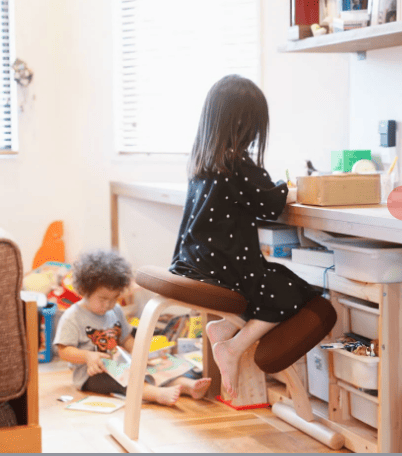
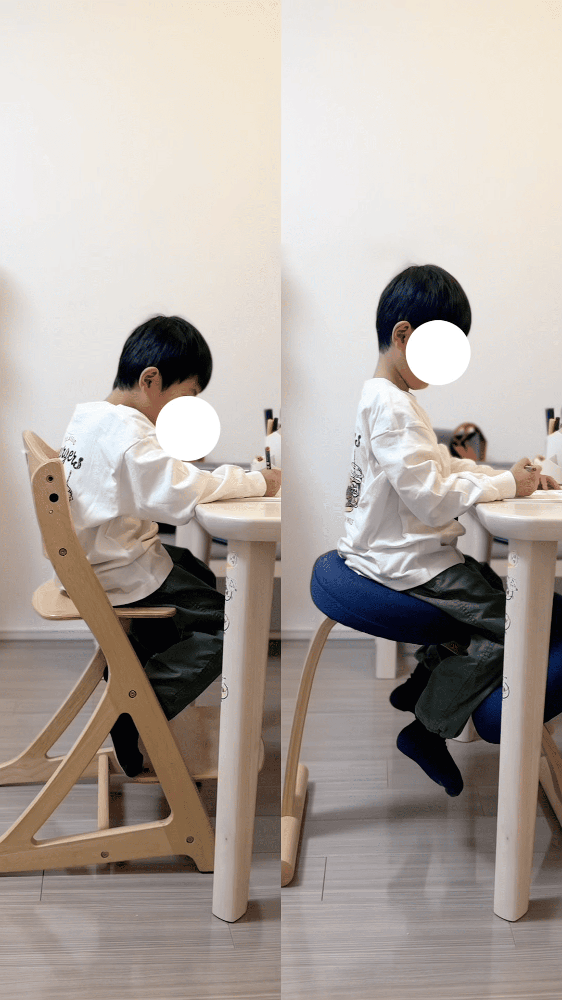
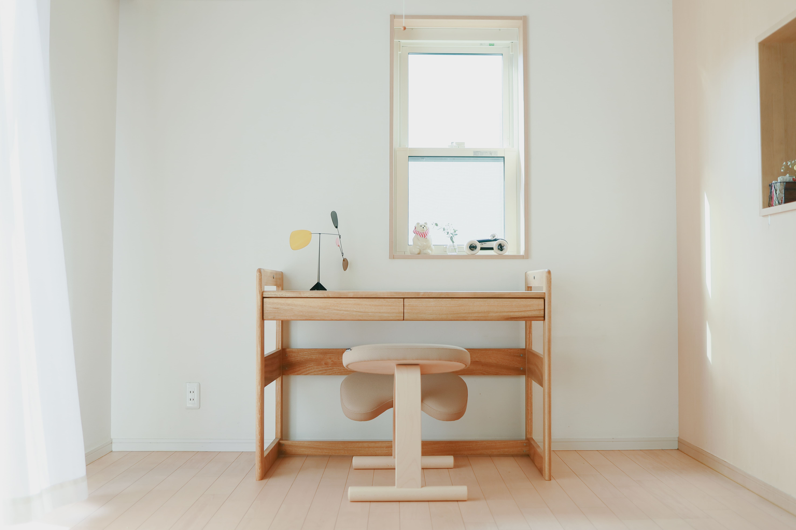
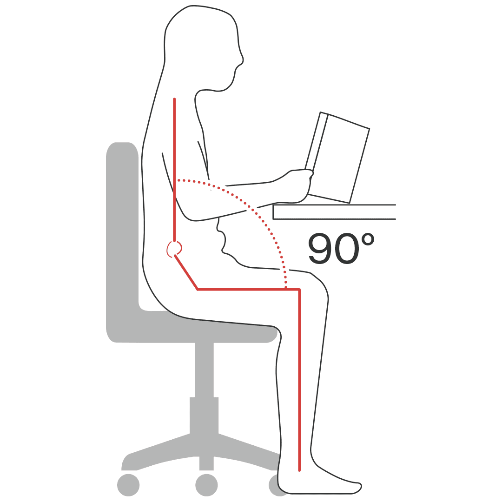
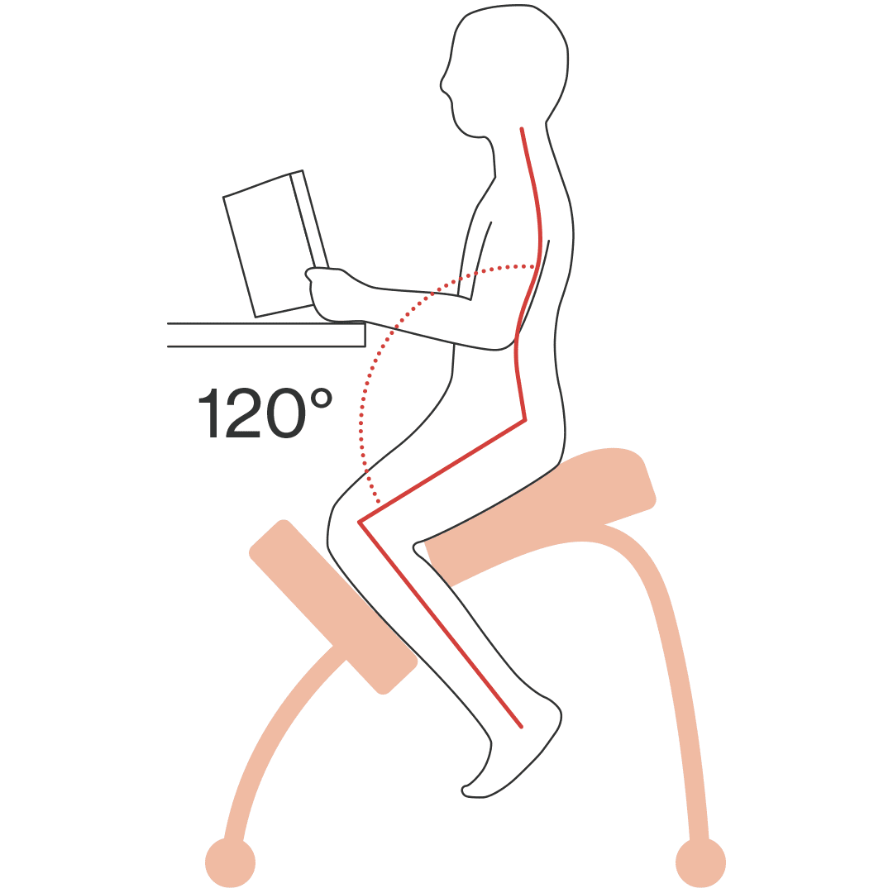
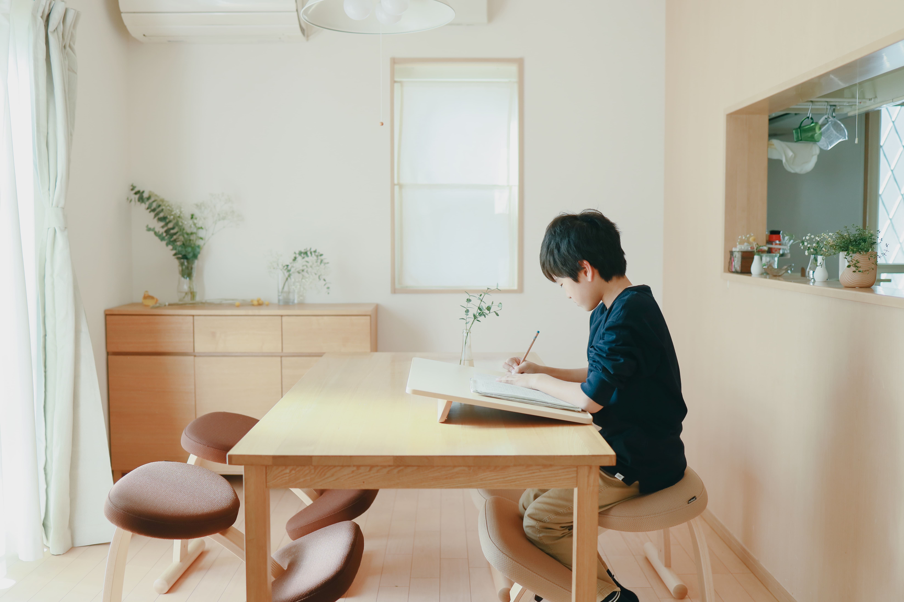
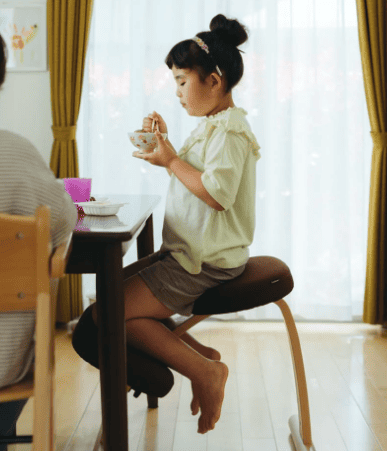
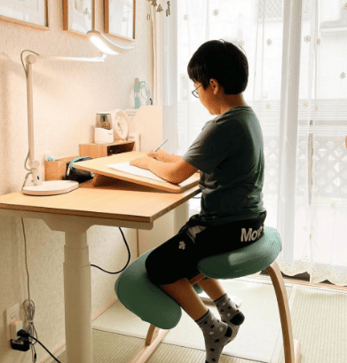
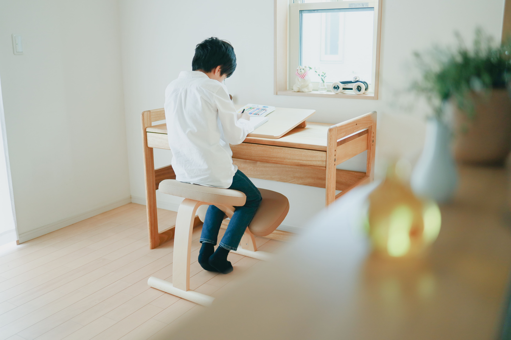

食事のときも、宿題のときも、
気づけば何度も注意している。
そんな毎日に、
座るだけで姿勢が整いやすいバランスチェアです。
何度言っても、また崩れる。
その繰り返しに、少し疲れていませんか。

食事のとき、横を向いたり、足をぶらぶらさせたり。
宿題のとき、気づけばノートに顔が近づいている。
リビング学習でも、いつのまにか背中が丸くなっている。
そのたびに、「姿勢直して」。
本当は、何度も言いたいわけじゃない。
気づけば今日も、同じことを繰り返している。
どうして、何度言っても変わらないのでしょう。
机の高さ、椅子の座り方、成長のスピード。
姿勢が崩れる理由は、ひとつではありません。
一般的な椅子では、お腹と太ももの角度が約90度になる姿勢で座ることが多くあります。
成長の途中にある子どもの体にとって、その姿勢をずっと保ち続けるのは、意外と簡単ではないのかもしれません。
姿勢を保ちにくい原因のひとつは、座る環境や椅子の構造にある場合があります。
バランス イージーが注目したのは、お腹と太ももの角度を約120度に開いて座る姿勢でした。
もし、座るだけで自然に姿勢を保ちやすくなるとしたら。
その考え方から生まれたのが、バランス イージーです。

食事のとき、何度も言わなくても、自然に前を向いて座っている時間が増えていく。
宿題のとき、机に向かう姿勢を保ちやすくなる。
リビング学習でも、座っているだけで、姿勢を保ちやすい。
言うことが、少しずつ減っていく。
増えるのは、笑って見ていられる時間。
毎日使う椅子を見直すことが、そのきっかけになるかもしれません。

毎日の「姿勢直して」を減らすために。
座る姿勢そのものに着目して生まれた、日本製のバランスチェアです。
木のぬくもりを感じる、シンプルな佇まい。
リビングにも、ダイニングにも、自然になじみます。
見た目はシンプルでも、姿勢を保ちやすくする工夫があります。
その構造には、理由があります。
一般的な椅子は、背もたれに寄りかかって座る形が基本です。
背中を預けられる分、骨盤は少しずつ後ろに倒れやすくなります。
骨盤が後ろに倒れると、背中は自然に丸まっていきます。
何度「姿勢直して」と言っても、また同じように戻ってしまうのは、そのためかもしれません。
バランス イージーは、背もたれを使わず、体をやや前に開いて座る姿勢を採用しました。
お腹と太ももの間が開くことで、骨盤が立ちやすくなり、背中が自然にまっすぐ伸びやすくなります。
座り方を意識しなくても、姿勢が整いやすい。
それが、この椅子の構造です。

お腹と太ももの角度 約90°
姿勢を保ちにくい

お腹と太ももの角度 約120°
姿勢を保ちやすい
姿勢が崩れる理由は、ひとつではありません。
バランス イージーは、その中でも「座る環境」に着目した椅子です。
実際に座った人は、どう感じているのでしょう。
累計レビュー10,000件以上（公式・楽天市場・Yahoo!ショッピング・Amazon合算）

「…足を組んだり姿勢が安定しなかったのですが、座ると背筋が伸びていました！！」
――楽天レビューより（評価5）
「何気なく座るだけで姿勢がピシッとする。6歳の子供の姿勢が気になっていましたが…これがあれば安心です。」
――Googleクチコミより（評価5）

「食事や机に向かう時に斜めに座る癖があった6歳の娘のために購入しました。…食事の時間も以前の半分くらいになりました（感動）」
――楽天レビューより（評価5）

「娘の勉強机の椅子に買いました。座るだけで姿勢が良くなっているのが目に見えて分かるので買ってよかったです。」
――Yahoo!ショッピングレビューより（評価5）
「9才の子どもに購入しました。1日目は消極的でしたが…『この椅子だと勉強に集中できる！』と言っています。」
――公式サイトレビューより（評価4）
「子どもに『足！！』と言う回数が激減して、私のストレスも減りました(^^)」
――公式サイトレビューより（評価5）
「今までは『背筋伸ばして〜』と何度も注意していたのが、ほとんど言わなくて済むようになり…妹自身のストレスも減ったと喜んでいました。」
――楽天レビューより（評価5）
「特に『姿勢を直して！』を何回も言わなくていいのが親としてはありがたい！」
――Googleクチコミより（評価5）
それでも、他の椅子とどう違うのか気になる方もいるかもしれません。
他の椅子との違いは、次の5つの事実にあります。
楽天週間ランキング
通算145週No.1
楽天市場のバランスチェア週間ランキングで、通算145週1位。
90日間全額返金保証
使ってみて合わなければ、90日以内は返金の対象です。
日本製
美濃・飛騨の木工技術による、日本国内での製造です。
木部10年保証
木部は10年間保証。長く使う前提で作られています。
パーツ単位の交換対応
部品は1つから購入・交換可能。買い替えは不要です。
次に、お子様に合うサイズの選び方をご案内します。
長く使うものだからこそ、購入前に確認しておきたいポイントをご紹介します。
Q1. 通常フレームと、ショートフレーム。どちらを選べばいいですか。
選ぶときに一番大切なのは、お使いの机の高さです。
一般的な高さ（約70〜78cm）の机では、通常フレームをご使用いただくケースが多いです。
通常フレームで対応していない、低めの机（約65cm程度）の場合は、ショートフレームがおすすめです。
身長や机の高さの組み合わせによっては、ショートフレームが適している場合もあります。
詳しくはサイズ目安表をご確認ください。
迷った場合は、お気軽にお問い合わせください。
お子様の身長・机の高さの詳細な目安については、公式サイトのサイズ目安表を必ずご確認ください。
Q2. 自宅の机に合いますか。

ダイニングテーブルでも、学習机でも、ご使用いただくケースが多くあります。
机の高さが合っていれば、どちらでもお使いいただけます。
背もたれがないコンパクトな設計なので、机まわりもすっきり使えます。
Q3. 子どもが使えますか。
目安は「何歳から」ではなく「何cmから」です。
対応身長は110cm〜180cmなので、5〜7歳のお子様から大人まで、長く使えます。
膝クッションは上下に動かせるので、成長に合わせて調整できます。
フローリングへの傷が気になる方へ。
フローリングへの傷が気になる場合は、専用の床キズ防止パッドをご用意しています。椅子の脚に貼るだけで、床への傷を軽減できます。
「価格が高いので長い間購入を検討するだけでしたが、こんなに劇的に姿勢が良く変わるのであればもっと早く買っておけばよかったと思います。」
――楽天レビューより（評価5）
長く使うものだからこそ、安心してお選びいただける保証をご用意しています。
フレームカラー：ナチュラル48,290円（税込）
フレームカラー：ウォールナット53,900円（税込）
ここまで読んでも気になることがあれば、よくある質問をご確認ください。
座り方が定着するまでに個人差があります。最初はうまく座れなかったり、しばらくすると崩れたりすることもあります。座るたびに毎回完璧な姿勢になる、というものではありません。
座り慣れるまで、膝やすねに違和感を覚える方がいらっしゃいます。
お腹と太ももの角度が約120度になるよう膝クッションの位置を調整し、あわせて座る位置も座面の中央に整えることで、負担が軽減される場合があります。
それでも長時間同じ姿勢が続くと負担がかかりやすいため、1〜2時間を目安に休憩を挟みながらお使いください。
また、机の高さやお子様の身長とのバランスによっても感じ方が変わります。ご不明な場合は、お気軽にお問い合わせください。
長時間の連続使用はおすすめしていません。集中が途切れたタイミングなどで、適度に立ち上がって休憩を取りながらお使いください。
無垢材の脚が直接床に触れるため、保護をせずに長期間使用すると、フローリングに傷がつく場合があります。傷が気になる方には、専用の床キズ防止パッド（オプション）をご用意しています。市販のフェルトシールやマットをご使用いただく方法もあります。
組立目安は約30分です。組み立てには、付属の六角レンチを使用します。実際のレビューでも、女性おひとりで組み立てられたという声が多く寄せられています。
目安は、お使いの机の高さです。一般的な高さ（約70〜78cm）の机では通常フレーム、低めの机（約65cm程度）ではショートフレームがおすすめです。詳しくはサイズ目安表をご確認いただくか、お気軽にお問い合わせください。
ご購入から90日以内であれば、使用後でも返金の対象になります。返送料のご負担など、詳細な条件は公式サイトの返品ポリシーをご確認ください。